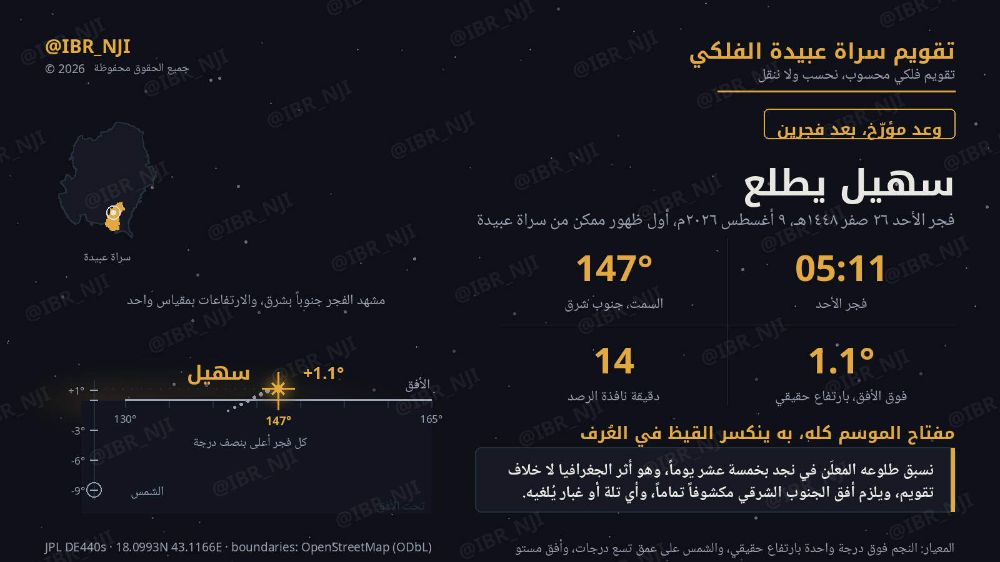
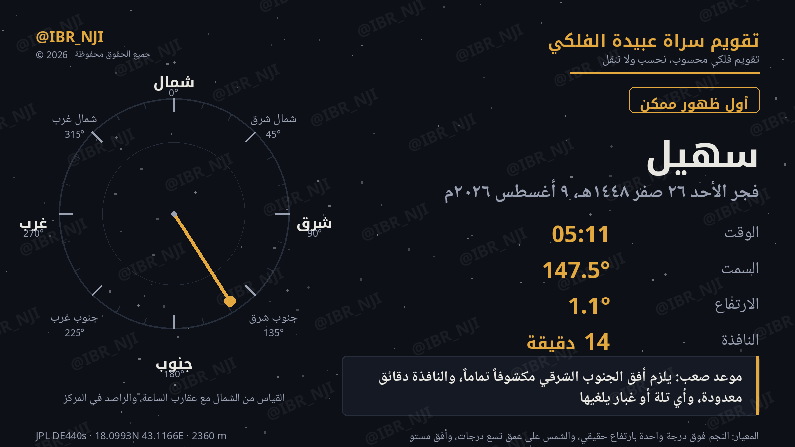

لحظة الرصد
26 صفر 1448هـ · الأحد 9 أغسطس 2026م- الوقت
- 05:11
- السمت
- 147.5°
- الارتفاع
- 1.1°
- النافذة
- 14 دقيقة
درب الصعود
حساب حيّ من المحرّك، أسبوعياًسهيل يرتفع نحو نصف درجة كل فجر. هذا ارتفاعه الحقيقي لحظة بلوغ الشمس عمق تسع درجات، من أول ما يمكن رؤيته حتى سقفه المطلق.
لا تَعِد بما فوق السقف
ميل سهيل −52.70°، فسقفه المطلق من سراة عبيدة 19.20° فوق الأفق الحقيقي — ولا يبلغه إلا في أوائل أكتوبر. فلا يُوعَد بعشرين درجة بحال.
لماذا سراة عبيدة تسبق وسط الجزيرة
أثر الجغرافيا لا خلاف التقويمالفرق ستّ درجات ونصف
بين سراة عبيدة ووسط الجزيرة ستّ درجات ونصف من خط العرض. وسهيل نجم جنوبي (ميله −52.7°)، فكلما اتجهتَ جنوباً بكّر طلوعه — خمسة عشر يوماً في موعده هذا العام.
مفتاح الموسم
به ينكسر القيظ في عُرف أهل الجزيرة. وموعده هنا صعب: يلزم أفق الجنوب الشرقي مكشوفاً تماماً، والنافذة أول ليلة دقائق معدودة، وأي تلة أو غبار يُلغيها.
دليل الرصد
خطوات عملية لفجر الأحدقبل الخروج
- كن في موضعك قبل 05:11 بعشر دقائق على الأقل، ليتآلف بصرك مع الظلام.
- يلزم أفق الجنوب الشرقي مكشوفاً تماماً — لا مبنى ولا تلة ولا جبل في ذلك الاتجاه.
- استعمل بوصلة جوالك لتحديد السمت 147° إن لم تعرف الجهة بالنظر.
ماذا تتوقع
- سهيل قريب من خط الأفق نفسه (1.1°) — لا ترفع بصرك، ابحث عنده مباشرة فوق الخط.
- ضوء ثابت لا يومض كطائرة، وأشدّ لمعاناً من أي نجم قريب منه على ارتفاعه.
- النافذة 14 دقيقة فقط قبل أن يبتلع ضوء الفجر ما تبقّى من ظلمة السماء.
إن حجبه الغبار
الحساب لا يعد بصفاء الجو، يعد بموضع النجم — وهو غداً أعلى بنصف درجة، وبعد غد أعلى بدرجة. كل فجر قادم أسهل من الذي قبله حتى يبلغ سقفه في أكتوبر.
وسواء رأيتَه أو حجبه الأفق، فتسجيل ما شهدتَه بوقته الدقيق رصدٌ مفيد — يُقابَل بالحساب لا محل له.
البطاقات
سهيل على X
